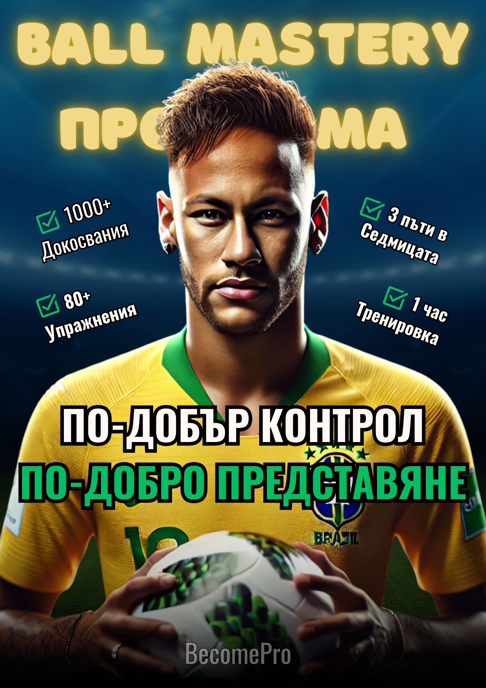
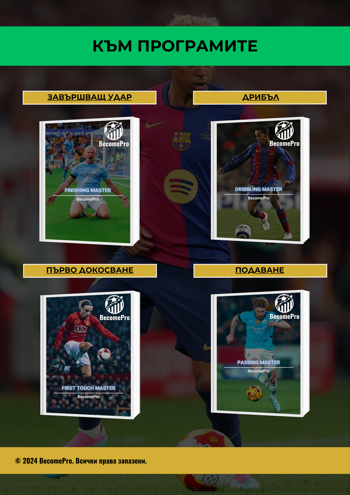

Техническа система
Техническа система
Онлайн програма
Технически пакет
Пълна техническа система за футболисти, които искат по-добър контрол, по-уверени действия с топката и повече качество в игра.
Цена
€49.99
Достъп до материалите след покупка.


Въведение
За играчи, които искат техниката им да се вижда в игра.
Техническият пакет е създаден за самостоятелна работа извън клубните тренировки. Целта е играчът да има ясна система, вместо да прави случайни упражнения без посока.
Подходящ е за футболисти, които искат повече контрол с топката, по-добро първо докосване, по-уверено действие под напрежение и по-ясна идея в игра.
Какво има вътре
Структура, упражнения и фокус за самостоятелна работа.
Програмата е изградена така, че играчът да знае какво тренира, защо го прави и как да надгражда постепенно.
Техническа система
 Ясна посока за развитие
Ясна посока за развитие
Пълно описание
Какво представлява програмата?
Технически пакет е онлайн програма за футболисти, които искат да работят целенасочено върху основните технически детайли в играта: контрол, първо докосване, работа с топка, координация и увереност при действие.
Програмата е подходяща за играчи, които тренират в клуб, но искат допълнителна индивидуална работа между отборните тренировки. Не е нужно специално оборудване - достатъчни са топка, малко пространство и желание за постоянство.
�зползваш програмата като следваш структурата, изпълняваш упражненията с внимание към детайла и постепенно увеличаваш трудността. Фокусът е върху качество на изпълнението, а не върху случайно количество повторения.
Фокус
Техника • Контрол • Скорост • Увереност
Създадена за самостоятелна работа с ясна цел и конкретна посока.
Какво получаваш
Всичко нужно, за да тренираш по-структурирано.
Ясна структура
Техническа програма с конкретна посока и логика на работа.
Работа с топка
Упражнения за контрол, първо докосване и по-добро усещане с топката.
Прогресия
Надграждане от по-лесно към по-трудно, за да има реална посока.
Самостоятелна работа
Насоки как да тренираш с фокус, когато си извън клубния процес.
Достъп след покупка
Получаваш материалите и можеш да се връщаш към тях, когато тренираш.
За кого е подходяща
За футболисти, които искат по-качествени действия с топката.
Тази програма е подходяща за футболисти, които искат да подобрят контрола, увереността с топката, първото докосване и качеството на действията си в игра.